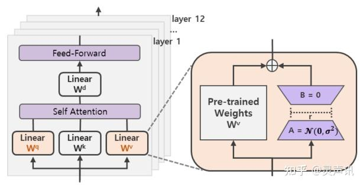
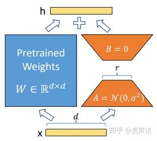
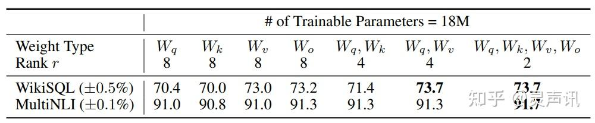
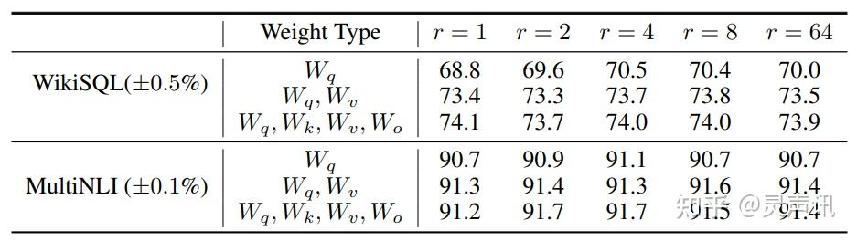
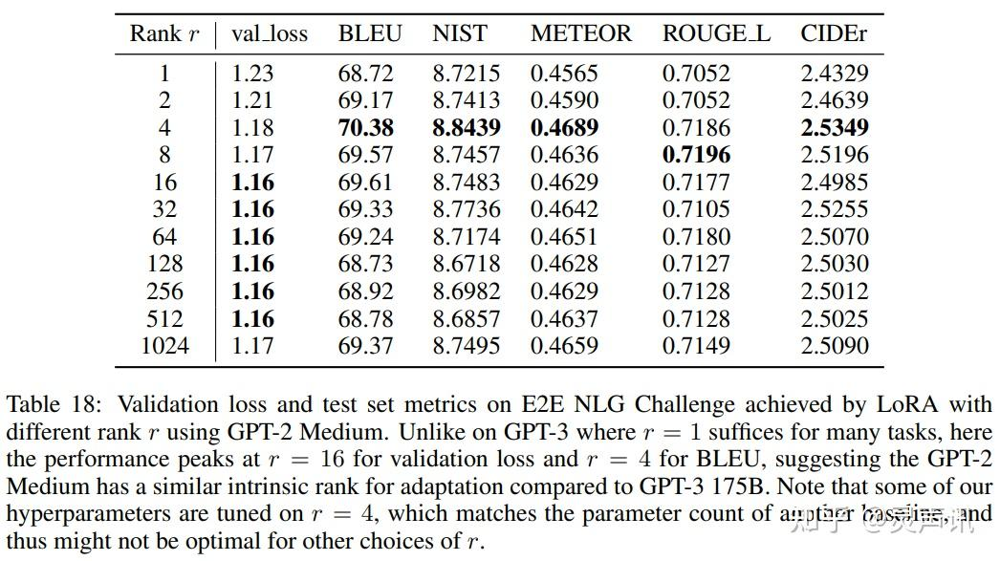

LoRA
LoRA
背景
神经网络包含很多全连接层，其借助于矩阵乘法得以实现，然而，很多全连接层的权重矩阵都是满秩的。当针对特定任务进行微调后，模型中权重矩阵其实具有很低的本征秩（intrinsic rank）。
因此，论文的作者认为权重更新的那部分参数矩阵尽管随机投影到较小的子空间，仍然可以有效的学习，可以理解为针对特定的下游任务这些权重矩阵就不要求满秩。
技术原理
LoRA 论文，该方法的核心思想就是通过低秩分解来模拟参数的改变量，从而以极小的参数量来实现大模型的间接训练。
在涉及到矩阵相乘的模块，在原始的 PLM 旁边增加一个新的通路，通过前后两个矩阵 A，B 相乘，第一个矩阵 A 负责降维，第二个矩阵 B 负责升维，中间层维度为 r，从而来模拟所谓的本征秩（intrinsic rank）。
可训练层维度和预训练模型层维度一致为 d，先将维度 d 通过全连接层降维至 r，再从 r 通过全连接层映射回 d 维度，其中，，r 是矩阵的秩，这样矩阵计算就从 变为 ，参数量减少很多，计算过程更快。
在下游任务训练时，固定模型的其他参数，只优化新增的两个矩阵的权重参数，将 PLM 跟新增的通路两部分的结果加起来作为最终的结果（两边通路的输入跟输出维度是一致的），即 。第一个矩阵的 A 的权重参数会通过高斯函数初始化，而第二个矩阵的 B 的权重参数则会初始化为零矩阵，这样能保证训练开始时新增的通路 BA=0 从而对模型结果没有影响。
在推理时，将左右两部分的结果加到一起即可，，所以只要将训练完成的矩阵乘积 BA 跟原本的权重矩阵 W 加到一起作为新权重参数替换原本 PLM 的 W 即可，对于推理来说，不会增加额外的计算资源。
此外，Transformer 的权重矩阵包括 Attention 模块里用于计算 query， key， value 的 Wq，Wk，Wv 以及多头 attention 的 Wo，以及 MLP 层的权重矩阵，LoRA 只应用于 Attention 模块中的 4 种权重矩阵，而且通过消融实验发现同时调整 Wq 和 Wv 会产生最佳结果。
实验还发现，保证权重矩阵的种类的数量比起增加隐藏层维度 r 更为重要，增加 r 并不一定能覆盖更加有意义的子空间。
 那么关于秩的选择，通常情况下，rank 为 4，8，16 即可。
